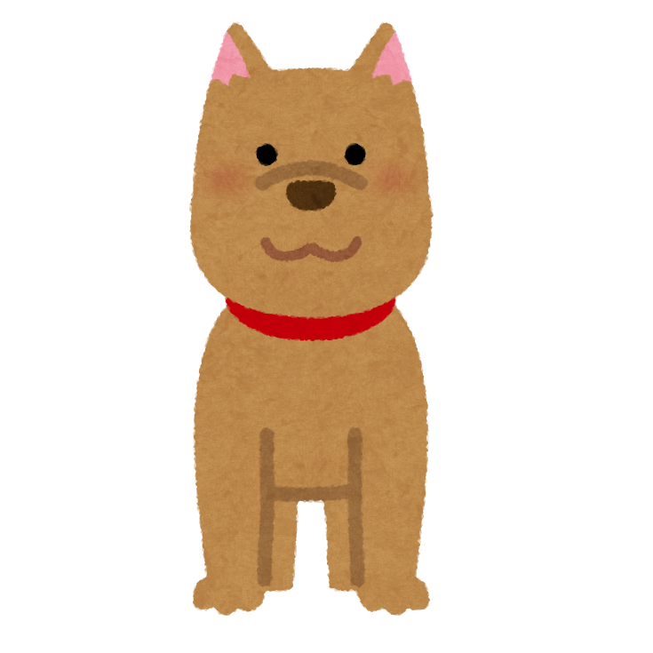
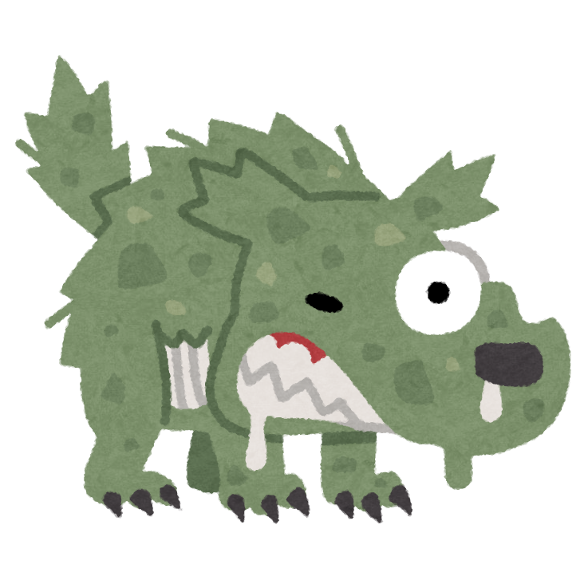
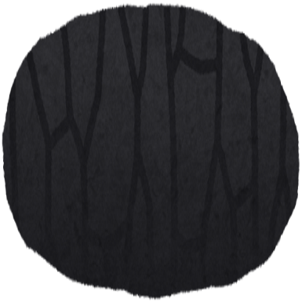

）を操作して、迷路をうろつくゾンビ犬（
）を「穴を掘って埋める」ことで全滅させるアクションパズルゲームです！1. 操作方法（キーボード・画面ボタン）
| アクション | キーボード | 画面ボタン |
|---|---|---|
| 上下左右に移動 | ↑ ↓ ← → | 方向ボタン |
| 目の前に穴を掘る（5段階） | X | 掘るボタン |
| 目の前の穴を埋める（5段階） | Z | 埋めるボタン |
| その場で向きだけ変える | A（左回り） / S（右回り） | 向き変更ボタン |
2. ゾンビ犬の退治の流れ（5段階の穴）
守り犬には直接攻撃する手段がないため、次の3ステップで退治します。① 5回掘って最大の穴にする → ② 落ちたら5回埋めて退治！
 |
 |
|
➡
穴に落ちる
穴に落ちる
|
||
➡
Zを5回で埋める
Zを5回で埋める
|
退治! | |
・埋めて完全撃破：穴に落としただけでは倒せません。Z を5回押して通路に戻すと退治完了です（早く埋めるほど高得点ボーナス！）。
・脱出と救出に注意：穴に落ちたゾンビ犬は約5秒たつと這い上がって復活します。また、他のゾンビ犬が接触すると一瞬で救出されてしまいます。
3. ルール・攻略のコツ
・自分の穴は通れない：守り犬は大きさに関係なく穴の上を歩けないため、レンガの壁（ ）との間で自分の退路を塞がないよう注意しましょう（同時に掘れる穴は最大10個で、時間経過でも自然に消えます）。
）との間で自分の退路を塞がないよう注意しましょう（同時に掘れる穴は最大10個で、時間経過でも自然に消えます）。・その場で向き変更（A/S）を活用：行き止まりや角でゾンビ犬に追い詰められたときは、一歩も動かずにA/Sで振り返って目の前に穴を掘るのがコツです。
・残機（守り犬数）：ゾンビ犬に触れると守り犬（初期3匹）が1匹減り、0になるとゲームオーバーです。ステージをクリアしても守り犬の数は回復しないので大切に戦いましょう。
4. 画面の見方とボタン
・[START] / [RESET]ボタンをクリック（タップ）すると、選択中のステージをやり直す事ができます。